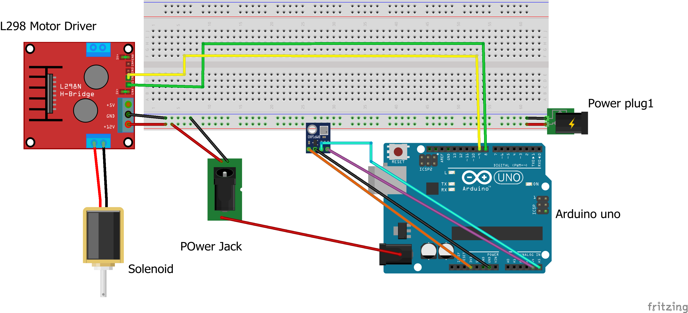

🧰 Required Components
🛠 Step-by-Step Instructions
1. Breadboard Setup (Testing Phase)
Start with a breadboard to test your components:
- Connect BMP180:
- SCL → Arduino A5
- SDA → Arduino A4
- VCC → 3.3V
- GND → GND
- Connect L298:
- IN1 → D8
- IN2 → D9
- +12V → Power jack (external supply)
- GND → Common ground
- OUT1 & OUT2 → Solenoid valve terminals
⚠️ Do NOT connect the 12V line to Arduino's 5V or VIN pin. Always use a separate power source for the motor driver.

Figure 1: Breadboard circuit testing using Arduino Uno, BMP180, and L298N
2. Soldering on Perfboard
Once confirmed working, replicate the layout on a perfboard:
- Solder male berg pins to the perfboard, aligned with Uno headers (Digital, Analog, Power)
- Place BMP180 on female berg headers and connect to A4, A5, 3.3V, and GND as marked below
- Solder wires from:
- A5 → SCL
- A4 → SDA
- 3.3V → BMP180 VCC
- GND → BMP180 GND
- Solder the L298 on top. Desolder IN1/IN2/IN3/IN4 pins and replace with downward-facing berg pins
- Solder IN1 wire to D8, and IN2 wire to D9 underneath the board
- Connect power jack terminals to +12V and GND on L298 module
- Make sure all grounds are common (L298, Arduino, Sensor)


Tip: In case IN1/IN2 pins get damaged, you can use IN3/IN4 instead. Just reroute the wires and update your code accordingly.
📋 L298N Pin Mapping
| L298N Pin | Connection |
|---|---|
| IN1 | Arduino D8 |
| IN2 | Arduino D9 |
| OUT1 | Solenoid Valve + |
| OUT2 | Solenoid Valve - |
| +12V | Power Jack (+) |
| GND | Common Ground |
🧪 Test BMP180
// BMP180 Test Code
#include <Wire.h>
#include <Adafruit_BMP085.h>
Adafruit_BMP085 bmp;
void setup() {
Serial.begin(115200);
Wire.begin();
if (!bmp.begin()) {
Serial.println("Sensor not found!");
while (1);
}
Serial.println("BMP180 Initialized.");
}
void loop() {
float pressure = bmp.readPressure();
float temp = bmp.readTemperature();
Serial.print("Pressure: "); Serial.print(pressure); Serial.print(" Pa\t");
Serial.print("Temp: "); Serial.println(temp);
delay(1000);
}
🚦 Final Code: Automatic Pressure Control
// Solenoid control using pressure
#include <Wire.h>
#include <Adafruit_BMP085.h>
#define IN1 8
#define IN2 9
#define PRESSURE_THRESHOLD 99780
Adafruit_BMP085 bmp;
void setup() {
Serial.begin(115200);
Wire.begin();
pinMode(IN1, OUTPUT);
pinMode(IN2, OUTPUT);
digitalWrite(IN1, LOW);
digitalWrite(IN2, LOW);
if (!bmp.begin()) {
Serial.println("Sensor error!");
while (1);
}
Serial.println("System Ready.");
}
void loop() {
float pressure = bmp.readPressure();
float temp = bmp.readTemperature();
Serial.print("Pressure: "); Serial.print(pressure); Serial.print(" Pa\t");
Serial.print("Temp: "); Serial.print(temp); Serial.print(" C\t");
if (pressure < PRESSURE_THRESHOLD) {
digitalWrite(IN1, HIGH);
digitalWrite(IN2, LOW);
Serial.println("Valve: OPEN");
} else {
digitalWrite(IN1, LOW);
digitalWrite(IN2, LOW);
Serial.println("Valve: CLOSED");
}
delay(1000);
}